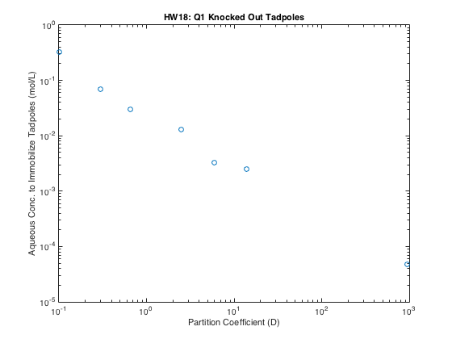
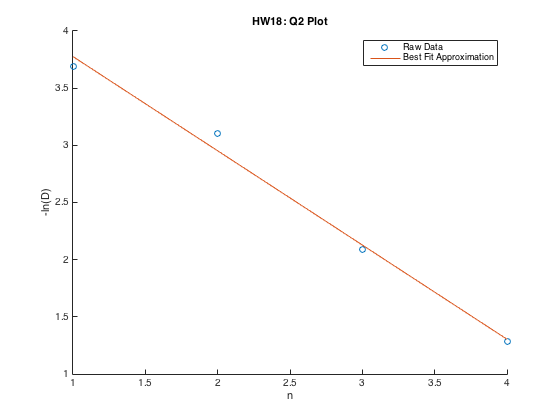

Contents
Question 1
clc, close all, clear all
M = csvread('data.csv', 1, 1);
x = M(:, 1); y = M(:, 2);
figure, loglog(x, y, 'o')
title('HW18: Q1 Knocked Out Tadpoles')
xlabel('Partition Coefficient (D)'), ylabel('Aqueous Conc. to Immobilize Tadpoles (mol/L)')

Question 2
clear all
disp('Question 2')
M = csvread('data2.csv', 0, 1);
n = M(:, 1); y2 = M(:, 2);
figure, hold all, plot(n, y2, 'o')
coeff2 = polyfit(n, y2, 1);
plot(n, coeff2(1).*n + coeff2(2));
title('HW18: Q2 Plot')
xlabel('n'), ylabel('-ln(D)')
legend('Raw Data', 'Best Fit Approximation')
disp(['m = ' num2str(coeff2(1))])
Question 2
m = -0.824

Question 3
clear all
disp('Question 3')
M = csvread('data3.csv');
x3 = M(:, 1); y3 = M(:, 2);
x3 = 1./(x3 + 273);
y3 = log(y3);
figure, hold all, plot(x3, y3, 'o')
coeff3 = polyfit(x3, y3, 1);
plot(x3, coeff3(1).*x3 + coeff3(2));
title('HW18: Q3 Plot')
xlabel('1/T'), ylabel('ln(D)')
legend('Raw Data', 'Best Fit Approximation')
disp(['m = ' num2str(coeff3(1))])
delHnot = -8.314*coeff3(1);
disp(['delHnot = ' num2str(delHnot)])
T = 298;
delGnot = mean(-8.314*T*y3);
disp(['delGnot = ' num2str(delGnot)])
delSnot = (delHnot - delGnot)/T;
disp(['delSnot = ' num2str(delSnot)])
Question 3
m = -3609.6423
delHnot = 30010.5659
delGnot = -5571.4031
delSnot = 119.4026